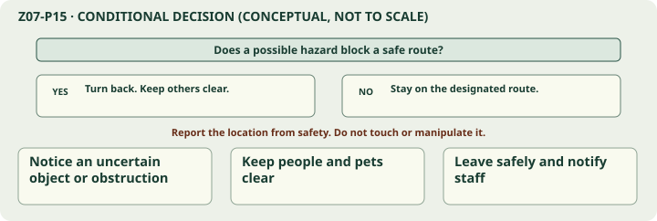

Z07-P15 · Traps and snares · New manuscript
Recognizing Shoreline, Culvert, Bait-Pile and Cubby Hazard Cues
Spot subtle visual and olfactory field cues indicating active regulated sets or hazardous wildlife attractants so you can steer clear early.
When it applies · Walking multi-use shorelines, ditches, marshes, and woodland trails in autumn and winter.
Equipment · Visual awareness and short pet leash.

Actions
- Scan multi-use trail margins, stream banks, and culvert openings for visual cues such as colored flagging tape, neat stick-or-box cubbies, wired stakes, freshly turned dirt patches, or narrow fenced-off trail funnels.[L10, L12]
- Treat sudden strong odors of skunk essence, fish oil, anise, or decaying meat along a bank or ditch as an immediate cue to keep children and leashed pets far away.[L10, L12]
- Give suspected set locations a wide silent detour without approaching closer to inspect or photograph close-up.[L09, L10, L12]
Failure recognition · Walking up to a neat wooden box or flagged stake in a culvert to see what is inside exposes people and pets to concealed spring jaws.[L09, L10, L12]
Verify · Hazard cues trigger immediate wide rerouting while keeping hands, boots, and pets well clear.[L10, L12]
Stop or change course · Stop advancing into any narrow brush funnel, culvert mouth, or strong-smelling bait patch on multi-use land.[L10, L12]
Evidence and editorial notes
- L09 · Minnesota DNR · Turn In Poachers (TIP) and Conservation Officer Reporting (Current web edition)
- Section: Reporting illegal, unmarked, or abandoned traps and snares · Conditions: Encountering suspected unlawful, out-of-season, or unsafe sets
Support: Do not touch, spring, or steal equipment; photograph from a safe distance with location coordinates and report to MN DNR TIP or local law enforcement.
Limitations: Tampering with lawful traps can be illegal and risks severe hand injury from stored spring energy. · Conflicting evidence: None noted.
Editorial note: Protects bystanders from injury and legal liability. · Specialist reviewer: Conservation enforcement reviewer
Primary source · checked 2026-11-25 - L10 · Minnesota DNR · Minnesota Trapping Regulations and Fur Harvest Rules (Current web edition)
- Section: Human and pet hazard recognition around lawful trapping areas · Conditions: Walking dogs or hiking in open public-use lands during furbearer seasons
Support: Keep dogs on short leashes on open multi-use lands during autumn/winter trapping seasons, avoid bait piles and shoreline culverts, and carry vet contact info.
Limitations: Body-gripping and cable devices present rapid fatal risk to unleashed pets; prevention via leashing is far safer than emergency release. · Conflicting evidence: None noted.
Editorial note: Core Z07 bystander & pet hazard prevention. · Specialist reviewer: Veterinary and outdoor-safety reviewer
Primary source · checked 2026-11-25 - L12 · Minnesota DNR · Living with Black Bears and Encounter Safety (Current web edition)
- Section: Attractant, bait-site, and carrion encounter avoidance · Conditions: Field travel near carrion, bait stations, or water-edge cubbies
Support: Strong odors, feathers, flagged stakes, or disturbed shoreline funnels can indicate carrion, bear feeding sites, or active regulated sets.
Limitations: Route wide around suspect attractants and keep companions and pets close. · Conflicting evidence: None noted.
Editorial note: Hazard-recognition field cue for Z07. · Specialist reviewer: Wildlife safety specialist
Primary source · checked 2026-11-25
Source lineage · New manuscript (Z07 P18 hazard recognition) · Classification · New manuscript.